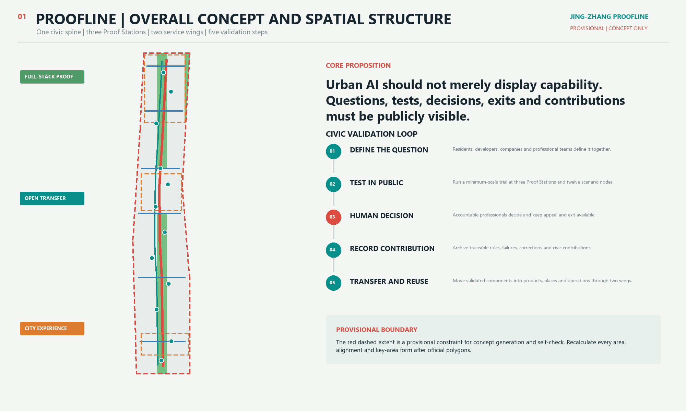
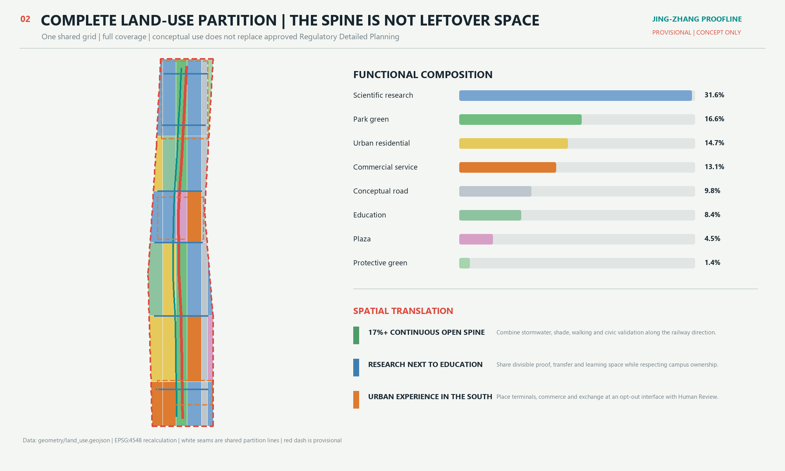
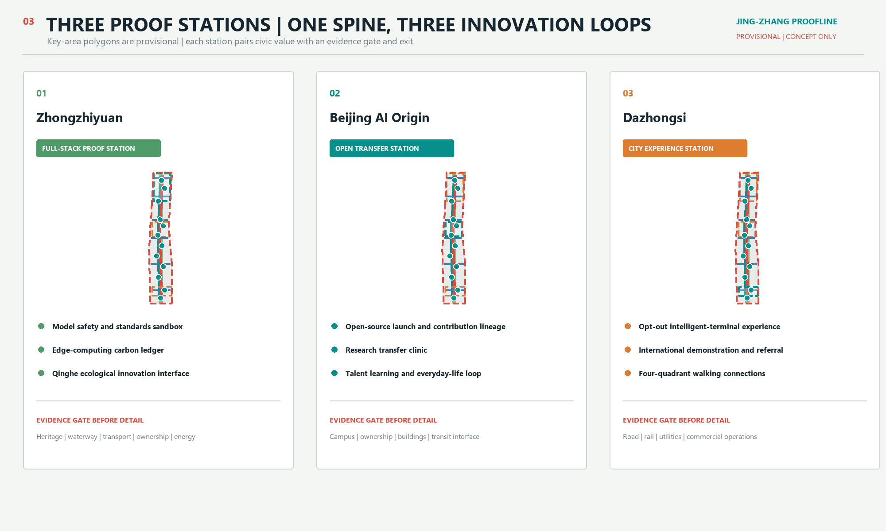
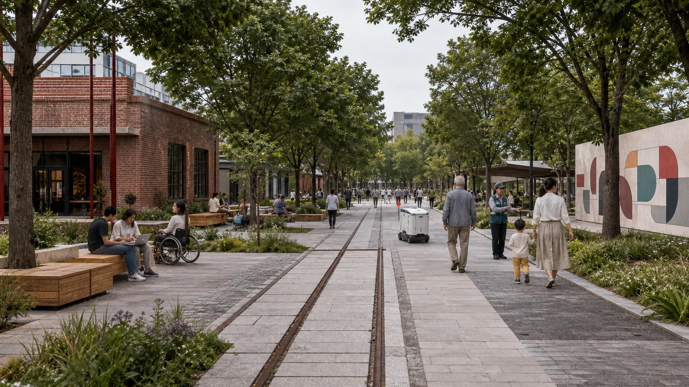
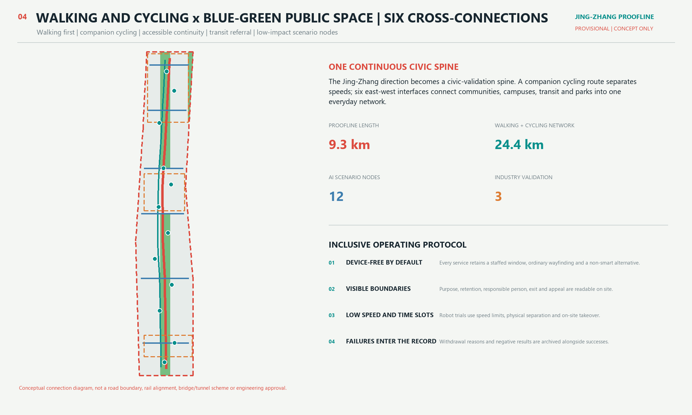
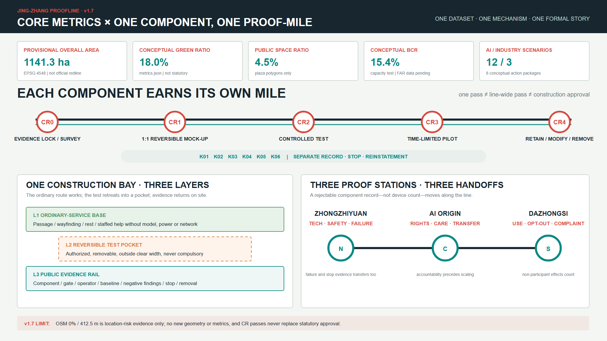

Zhongzhiyuan Safety Proof Garden
- Model safety and standards sandbox
- Edge computing carbon ledger
- Qinghe ecological innovation interface
Translate the station-and-mile grammar of the Jing-Zhang Railway into civic infrastructure for defining questions, public testing, Human Review, contribution memory and reusable transfer.

The Coordinated Research Area organizes ecosystem and governance; the Overall Design Area provides complete land use, capacity, Walking and Cycling Network, Blue-Green Space and phasing; three key areas test differentiated delivery.


Instead of three interchangeable AI parks, the areas make trustworthy testing, open transfer and urban experience into accessible, reversible and auditable spatial loops.
National-Beijing-Haidian statistics, an official open-data catalogue and open-licensed mapping respectively supply scale context, pending interfaces and risk cross-checks. Their limits travel with every number; none enters metrics or silently changes geometry.
Haidian already concentrates innovation supply, so Proofline emphasizes standards validation, failure records, IP and product validation instead of generic display.
Haidian scale | proves neither corridor distribution nor willingness to joinCompletes the national-Beijing-Haidian scale ladder and cross-checks the citywide order of magnitude in the transport report.
Beijing administrative scale | no corridor quota or performance claimPublic material names asset, laboratory and special-equipment safety, IP and research-transfer needs. The Origin Clinic therefore has four booking routes.
One public event | does not imply equal needs or an existing partnershipDefines a future route-school-station-accessibility workflow. The actual CSV required login and was neither read nor spatially located in this pass.
*Catalogue metadata | does not prove project coverage or student flowSupports walking, cycling and transit referral as principles, but cannot establish flows for the corridor or a specific station.
Central-area scale | rail / bus / bicycle: 15.0% / 8.9% / 22.3%The health scenario provides verified institution navigation and Human Review; it neither replaces diagnosis nor establishes a new facility.
Haidian scale | does not establish corridor access or service capacityAn independent rerun matches Issue #846: the mapped heritage park does not intersect PROV-SITE-001. This pass records the discrepancy and freezes geometry.
ODbL background evidence | no official polygon or formal areaExpand the spine, experience street, six cross-connections or robot pilot only after 15-minute station counts, transfer OD, bicycle-parking occupancy, accessibility continuity, and complaint/conflict baselines. Beijing's 2.74 billion parcels and the 60 school-bus catalogue records enter the problem list only; rider, ride-hailing, parcel and commercial-heat data still require permission, aggregate anonymity, corridor coverage and bias disclosure.
This AI-generated image communicates a human-scale principle: technology recedes and public life comes first. It cannot establish existing conditions, boundaries, buildings, areas or engineering feasibility.

Retain recognizable railway material and add continuous shade, rain gardens, accessible rest, staffed service and supervised low-speed tests. Information interfaces stay dim and switchable. Device quantity never measures urban intelligence.
A walking spine, companion cycling route and six east-west links connect transit, communities, workplaces and Public Space. Expansion passes five corridor evidence gates; building capacity follows survey-first and retain-first adaptation.

Three industry tests use speed or isolation boundaries, on-site responsibility and stop conditions. Public services avoid irreversible profiling and retain non-technical alternatives.
Zhongzhiyuan
Public test protocol, human decision and traceable resultsZhongzhiyuan
Aggregate device energy only; unrelated to individualsXiaoyue River Wing
Low speed, time slots, physical separation and on-site safety officerBeijing AI Origin Community
Authorized release and withdrawable contributor creditBeijing AI Origin Community
Separated referral for assets, safety, IP, research and product validationProofline spine
Edge recognition, immediate deletion and staffed fallbackProofline spine
Aggregate work-order display with resident appeal and correctionNear-campus interface
No profiling of minors; teacher remains in the loopCommunity-service point
Institution referral only; no diagnosis or medical recordCommunity-service point
Information navigation only; professional gives final reviewDazhongsi
Anonymous by default, clear notice and immediate exitProofline spine
Authorized upload, attribution and disputed-content removalNo generic process advances the whole line by assertion. Every K01-K06 component binds one location, one public problem and its own evidence before passing CR0-CR4.
The test retreats into a pocket while the ordinary route keeps working; evidence returns to a public, readable interface.
What moves along the line is not a device but an increasingly complete Proof-Mile record that can still be rejected.
Resolve ownership, condition, heritage, transport, accessibility, trees, soil, water, utilities, fire and operations; preregister wind, heat and shade observations on the actual route.
Material conflict or no accountable party: no mock-upTest passive, offline, removable components while recording geometry version, observation conditions and unobserved cases.
Trip, glare, ponding, wind-heat or maintenance failure: revisePhysical boundary, manual takeover, emergency stop, minimum data and incident record operate together.
No safe degraded state: stopPermit, dates, owner, baseline, notice, opt-out, staffed alternative and daily close-down are ready.
Serious incident or lost staffing: stop nowPublish positive and negative results, distributional effects and maintenance cost; reinstate and recover.
Retention is not construction approvalDirection, opening status, referral and exit remain available without power or network.
Cover errors; remove any blocked accessible routeContinuous access, wheelchair companion space and staffed service; observe shade and pedestrian wind-heat by declared condition.
Close if width, stability, wind-heat, shade or maintenance failsTest soil, infiltration, contamination, overflow, edge safety and maintenance first.
Bypass on ponding, pollution or utility conflictPassive information is the baseline; the dim screen disconnects and removes cleanly.
Switch off on privacy, electrical, rights or owner failureAuthorized controlled site only, with low speed, time slots, separation and a marshal.
First safety-critical failure triggers isolation and reviewA free-standing reversible frame shows provenance, failed tests and withdrawal routes.
Hide or remove uncleared content or heritage harmvisual/assets/construction-readiness.json.Upstream rules, public evidence, field gaps and use risks trigger an update. Every pass identifies affected outputs, adopt / revise / stop decisions and the condition for another review.
visual/assets/participation.json records Proofline's derivation, Issue #846 / merged PR #850 / PR #842 impact, adoption / rejection boundaries, change triggers and next-check commands.Structured data is authoritative; figures, PDFs and HTML are same-version explanation layers. Task coverage remains traceable in the matrices; every CR gate advances one named component only. PASS means review-ready, not approved.

Formal tasks, administrative background, an official catalogue, an open-licensed cross-check and provisional spatial material stay separate. Limits remain visible beside numbers.